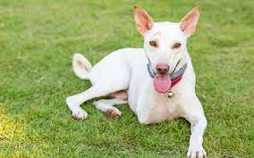
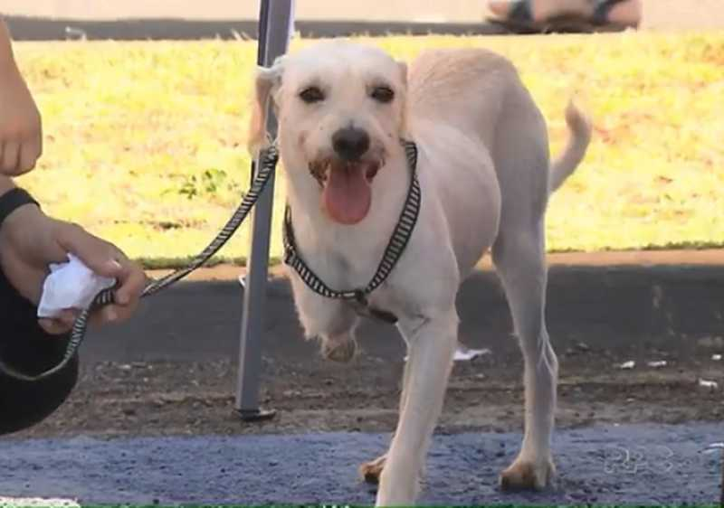
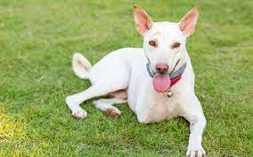
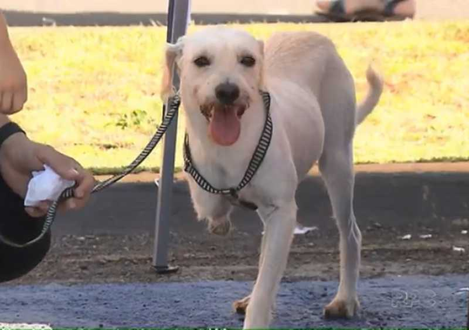

Kiara
Idade: 4 anos
Caracteristicas:
Arteira e guerreira
Dizemos que a Kiara é guerreira. Após perder a patinha e ser
abandonada por conta disso, ela conseguiu se virar nas suas e
sobreviveu até ser encontrada. Ela estava abstante machucada porém
fizemos todo tratamento e hoje ela está muito bem. Mesmo sem uma
patinha, a Kiara é bem arteira, não se deixe enganar. Ela adora
brincar e correr, além de se dá bem com todos.
 


